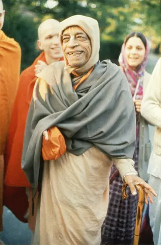

Vanipedia
the essence of Vedic knowledge
Demonstration of the planned search. Not live results.
Welcome to Vanipedia, a dynamic, living encyclopedia of Śrīla Prabhupāda’s words (vani). We are building an unparalleled digital repository of his text, audio, video, and images, comprehensively compiling his teachings from every angle of vision.
Who Is Śrīla Prabhupāda

Founder-Ācārya and Preeminent Śikṣā-Guru of the International Society for Krishna Consciousness
Śrīla Prabhupāda: The Founder-Ācārya of ISKCON, a GBC Foundational Document
Start here
Articles
AI-assisted. Quotations verbatim; framing generated. See Methodology.
- The Perils of Having No Idea
- Everyone Is Trying to Become the Master
- Struggle in Conditioned World
- Śrī Caitanya Mahāprabhu’s Grandfather Nīlāmbara Cakravartī
Prototype: these article links are not connected yet.
Listen
Nectar Drop
Lecture, Hamburg, 5 September 1969
0:00Under 90 seconds
Nectar Drops are short, focused audio excerpts of less than 90 seconds, drawn directly from Śrīla Prabhupāda’s recorded lectures, conversations, and morning walks.